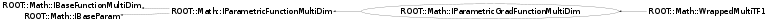

class ROOT::Math::IParametricGradFunctionMultiDim: public ROOT::Math::IParametricFunctionMultiDim
Documentation for the abstract class IBaseParam.
It defines the interface for dealing with the function parameters
This is used only for internal convinience, to avoid redefining the Parameter API
for the one and the multi-dim functions.
Concrete class should derive from ROOT::Math::IParamFunction and not from this class.
@ingroup ParamFunc
This class is also known as (typedefs to this class)
ROOT::Math::IParamMultiGradFunction, ROOT::Math::WrappedMultiTF1::BaseParamFunc, ROOT::Fit::Fitter::IGradModelFunctionFunction Members (Methods)
This is an abstract class, constructors will not be documented.
Look at the header to check for available constructors.
public:
| virtual | ~IParametricGradFunctionMultiDim() |
| virtual ROOT::Math::IBaseFunctionMultiDim* | ROOT::Math::IBaseFunctionMultiDim::Clone() const |
| virtual unsigned int | ROOT::Math::IBaseFunctionMultiDim::NDim() const |
| virtual unsigned int | ROOT::Math::IBaseParam::NPar() const |
| double | ROOT::Math::IParametricFunctionMultiDim::operator()(const double* x, const double* p) const |
| ROOT::Math::IParametricGradFunctionMultiDim& | operator=(const ROOT::Math::IParametricGradFunctionMultiDim&) |
| double | ParameterDerivative(const double* x, unsigned int ipar = 0) const |
| double | ParameterDerivative(const double* x, const double* p, unsigned int ipar = 0) const |
| void | ParameterGradient(const double* x, double* grad) const |
| virtual void | ParameterGradient(const double* x, const double* p, double* grad) const |
| virtual string | ROOT::Math::IBaseParam::ParameterName(unsigned int i) const |
| virtual const double* | ROOT::Math::IBaseParam::Parameters() const |
| virtual void | ROOT::Math::IBaseParam::SetParameters(const double* p) |
private:
| virtual double | DoParameterDerivative(const double* x, const double* p, unsigned int ipar) const |
Class Charts
{kind=link}
{kind=link}
{kind=link}
{kind=link}

Function documentation
void ParameterGradient(const double* x, const double* p, double* grad) const
Evaluate the all the derivatives (gradient vector) of the function with respect to the parameters at a point x.
It is optional to be implemented by the derived classes for better efficiency
double ParameterDerivative(const double* x, const double* p, unsigned int ipar = 0) const
Evaluate the partial derivative w.r.t a parameter ipar from values and parameters
return DoParameterDerivative(x, p, ipar)
void ParameterGradient(const double* x, double* grad) const
Evaluate all derivatives using cached parameter values
double ParameterDerivative(const double* x, unsigned int ipar = 0) const
Evaluate partial derivative using cached parameter values